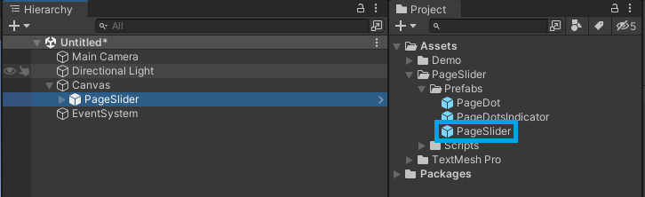
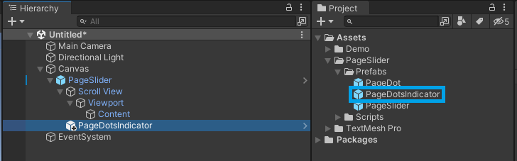
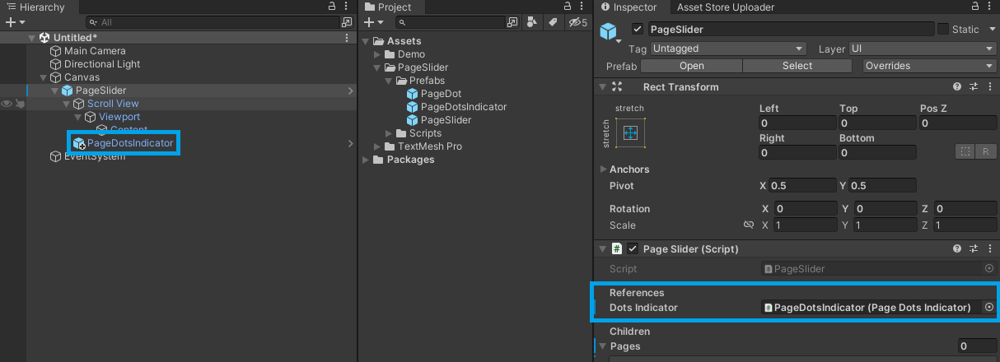
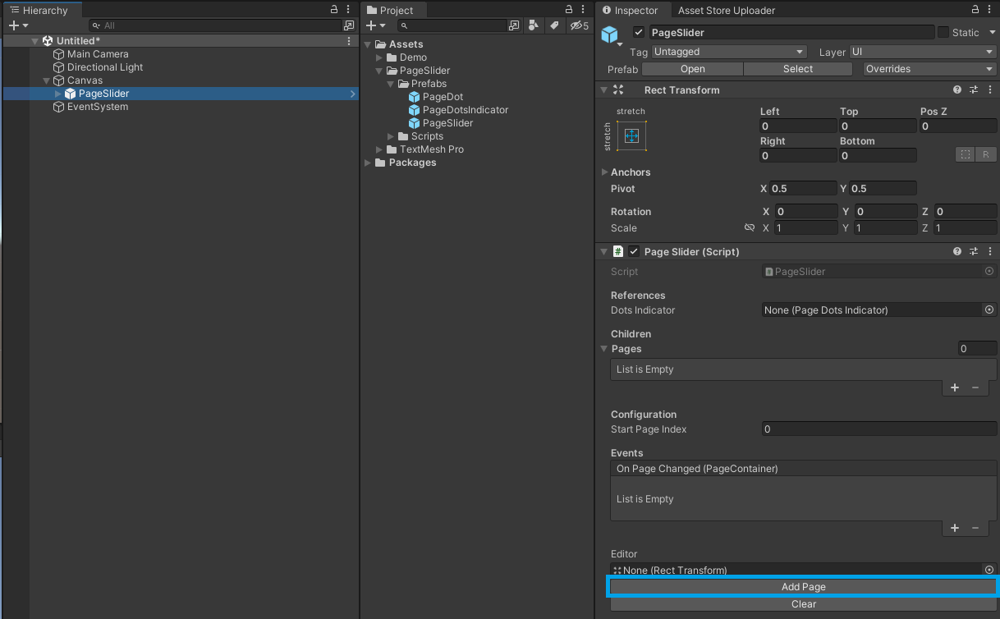
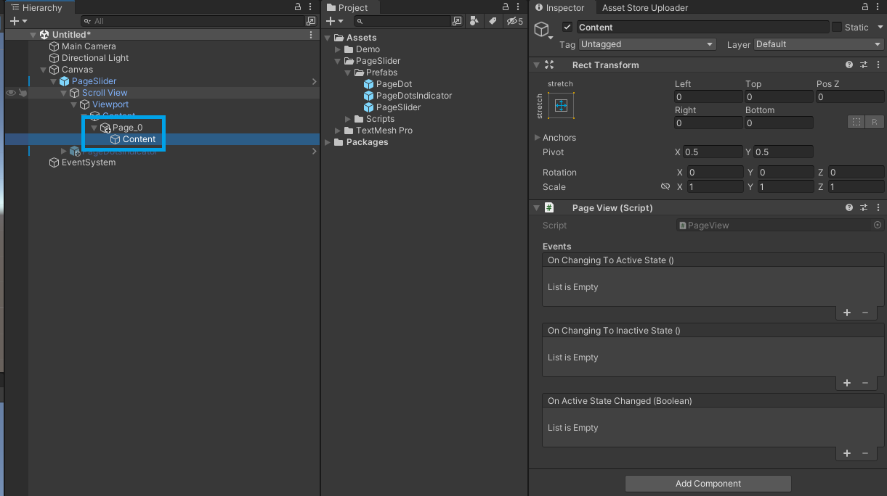
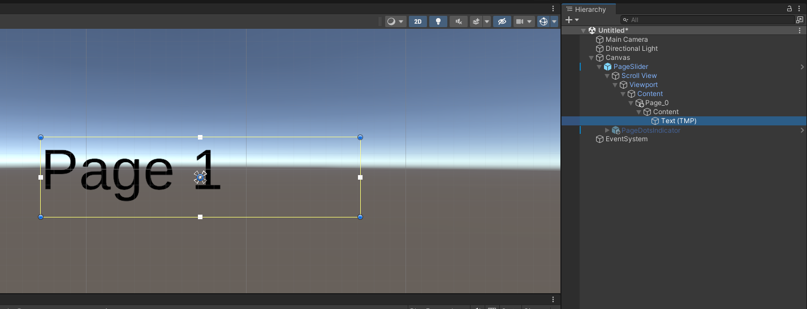

Using Predefined Content
This guide walks you through creating a Page Slider with a predefined set of pages and content.
1. Add the Page Slider
- Create a new
CanvasGameObject. - In the Project window, locate the
PageSliderprefab within your project's folder structure:PageSlider/Prefabs/. - Drag the
PageSliderprefab from the Project window and make it a child of theCanvasin the Hierarchy.

2. (Optional) Add Page Dots Indicator
- In the Project window, locate the
PageDotsIndicatorprefab within your project's folder structure:PageSlider/Prefabs/. - Drag the
PageDotsIndicatorprefab and make it a child of thePageSliderin the Hierarchy.

- In the Inspector window, assign the
PageDotsIndicatorto theDots Indicatorfield.

3. Add a new Page
- Select the
PageSliderGameObject. - Click the
Add Pagebutton in the Inspector window.

- Expand the
PageSliderhierarchy to locate the newly createdPage_X/ContentGameObject.

- Select the
ContentGameObject and add your desired UI elements to configure the page layout.

- Repeat the previous steps to add more pages.
Helpful links
- Understand the main concepts by reading the getting started guide
- For a more in-depth explanation, check out this video.
- Explore the API Reference for more details.
- Modify the source code available on GitHub.
- Install directly from the Unity Asset Store.
- Get in touch with me at tomazsaraiva.com.